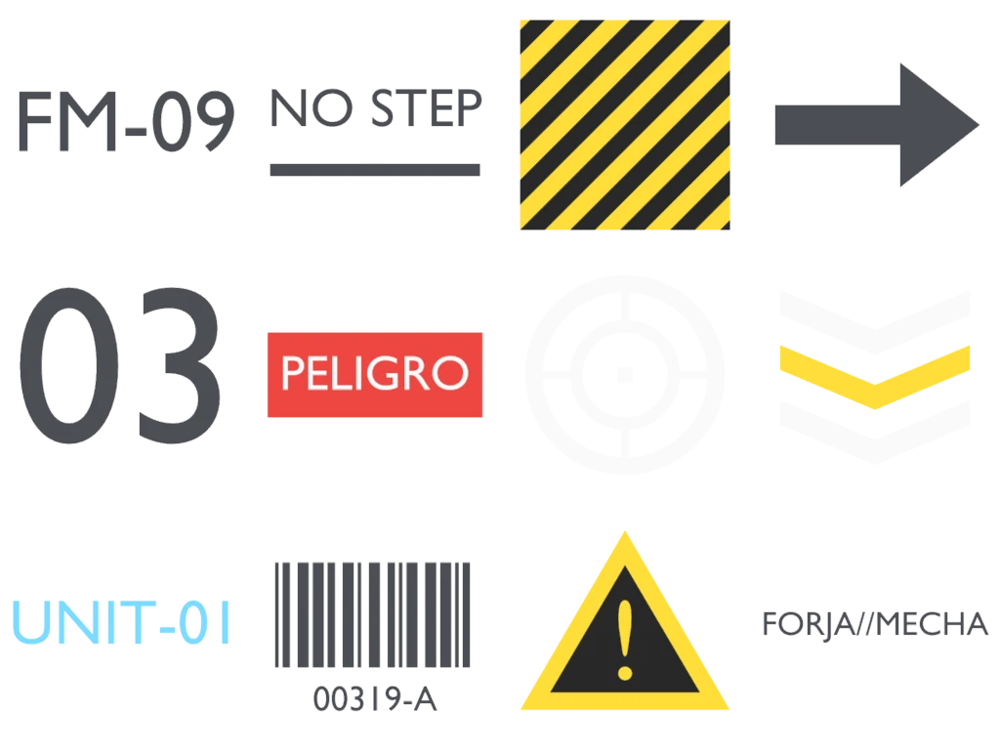
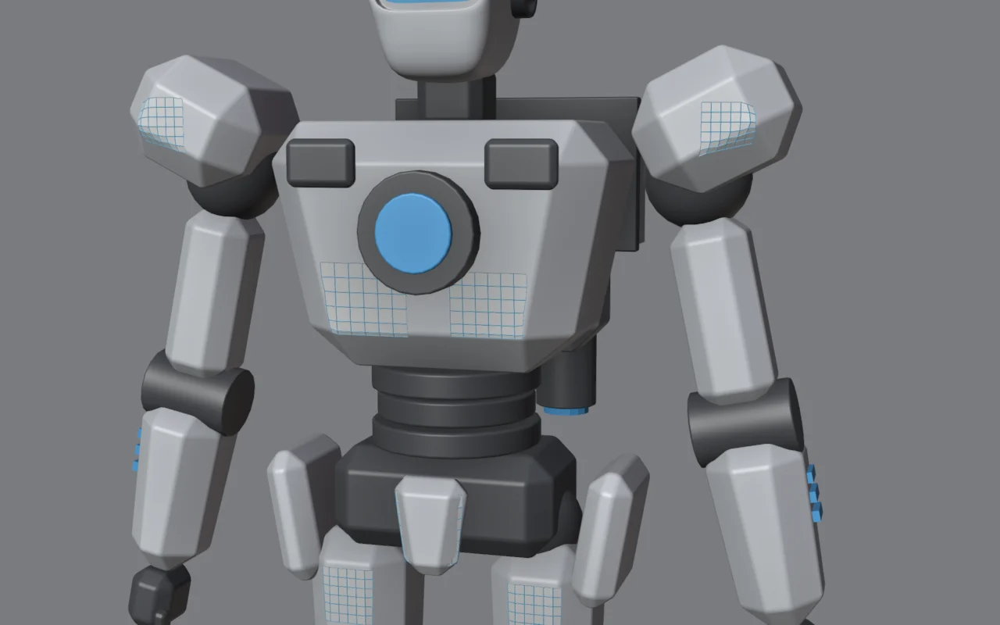

Lo que vas a forjar // objetivo
El mismo androide del módulo 9. Nueve decals pequeños (número de serie, logo, número de unidad, franjas de peligro, flechas, aviso y código de barras) y de repente tiene escala, función e identidad.
La hoja de decals // gratis


¿Por qué una hoja y no imágenes sueltas? Un solo material sirve para todos los decals: solo cambias qué trozo de la imagen muestra cada plano. Es como trabajan los videojuegos (se llama atlas).
El material de decal
- Nuevo material
Decal. En el Shader Editor: Shift+A → Texture → Image Texture → Open →forja_decals.png. - Color → Base Color del Principled. Alpha → Alpha del Principled. Las zonas transparentes de la imagen desaparecen.
- En el nodo de imagen, Extension: Clip, para que no se repita en los bordes.
- Roughness ~0.45: así el decal brilla un poco distinto que el blindaje, como una pegatina o pintura real.
EEVEE: si ves el fondo del decal en negro, en las propiedades del material (Settings) comprueba que Render Method sea Dithered, el valor por defecto en Blender 4.2.
Un plano por decal

- Shift+A → Mesh → Plane, pequeño. En modo edición, clic derecho → Subdivide (5 cortes) para que pueda adaptarse a superficies curvas.
- Colócalo delante de la superficie, mirando hacia fuera. Truco: pon el cursor sobre la pieza (Shift+clic derecho con Orientation: Geometry) y añade el plano con Align: 3D Cursor.
- Asígnale el material
Decal. - En Object Properties → Visibility, desactiva Shadow: un decal no debe proyectar sombra.
Elegir el decal con las UV
- Workspace UV Editing. A la izquierda, abre la imagen
forja_decals.png. - Con el plano en modo edición y todo seleccionado (A), verás su cuadrado UV. Escálalo (S) y muévelo (G) hasta que encierre la celda que quieres: por ejemplo, «FM-09».
- Si el decal no es cuadrado (como «PELIGRO»), escala el plano en 3D en la misma proporción para que no se deforme.
Precisión: cada celda mide exactamente 0.25 × 0.333 de la imagen. En el panel N del editor UV puedes escribir las coordenadas a mano.
Pegarlo a la superficie: Shrinkwrap
- Modificador Shrinkwrap en el plano, con Target = la pieza (el pecho, la hombrera…).
- Wrap Method Nearest Surface Point y Offset 0.0015: el plano se adapta a la forma y queda una micra por encima, para no parpadear.
- Emparenta el decal con su pieza (Ctrl+P) para que la acompañe al posar o animar.
Cuidado con los bordes: si el plano llega al borde de la pieza, Shrinkwrap lo dobla hacia la cara lateral y el decal se corta (pasó con el «03» de la hombrera). Deja margen o hazlo más pequeño.
Tu propia hoja de decals
Puedes hacer la tuya en cualquier programa de dibujo gratuito (Krita, GIMP, Inkscape) o en el propio Blender, como la nuestra:
- Escena nueva, cámara ortográfica mirando hacia abajo.
- Textos (Shift+A → Text; Tab para escribir), planos y formas con colores planos.
- Render en Workbench con Lighting Flat y Color Object; en Film, Transparent ✓; Color Management en Standard.
- Formato de salida PNG en modo RGBA, para conservar la transparencia.
Dónde poner decals // diseño
| Regla | Por qué |
|---|---|
| Pocos y pequeños | Dan escala por contraste: un texto diminuto hace que la pieza parezca enorme. Si hay demasiados, vuelve el ruido del módulo 5. |
| En zonas de descanso | Las superficies lisas son su sitio natural. Nunca encima del detalle mecánico. |
| Con lógica | «NO STEP» donde alguien podría pisar, franjas de peligro en bordes móviles, flechas indicando un sentido o una apertura. |
| Simetría rota | Un número solo en un hombro y las franjas en el otro: la asimetría pequeña da interés. |
| Contraste justo | Grafito sobre blanco y blanco sobre oscuro. Los colores fuertes (amarillo, rojo), solo para avisos. |